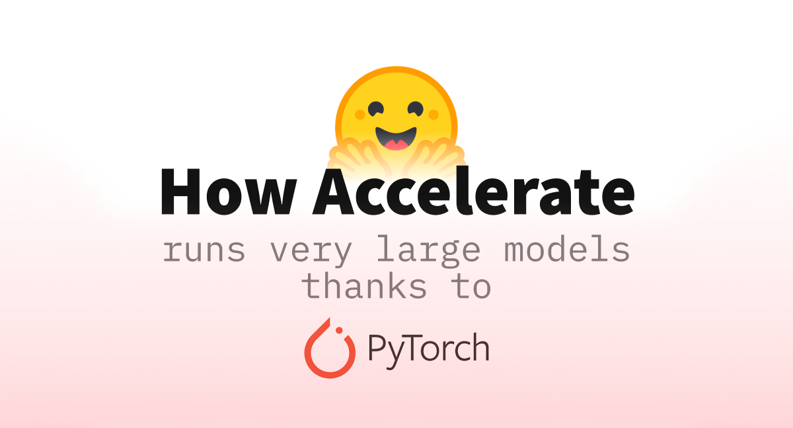

Hugging Face Accelerate Code Guide
 I’ve created a comprehensive code guide for Hugging Face Accelerate that covers everything from basic setup to advanced features like DeepSpeed integration.
Installation and Setup
Installation
pip install accelerateConfiguration
Run the configuration wizard to set up your training environment:
accelerate configOr create a config file programmatically:
from accelerate import Accelerator
from accelerate.utils import write_basic_config
write_basic_config(mixed_precision="fp16") # or "bf16", "no"Basic Concepts
The Accelerator Object
The Accelerator is the main class that handles device placement, gradient synchronization, and other distributed training concerns.
from accelerate import Accelerator
# Initialize accelerator
accelerator = Accelerator()
# Key properties
device = accelerator.device
is_main_process = accelerator.is_main_process
num_processes = accelerator.num_processesDevice Placement
Accelerate automatically handles device placement:
# Manual device placement (old way)
model = model.to(device)
batch = {k: v.to(device) for k, v in batch.items()}
# Accelerate way (automatic)
model, optimizer, dataloader = accelerator.prepare(model, optimizer, dataloader)
# No need to move batch to device - accelerate handles itSimple Training Loop
Basic Example
import torch
from torch.utils.data import DataLoader
from accelerate import Accelerator
from transformers import AutoModel, AutoTokenizer, AdamW
def train_model():
# Initialize accelerator
accelerator = Accelerator()
# Load model and tokenizer
model = AutoModel.from_pretrained("bert-base-uncased")
tokenizer = AutoTokenizer.from_pretrained("bert-base-uncased")
# Create optimizer
optimizer = AdamW(model.parameters(), lr=5e-5)
# Create dataloader (your dataset here)
train_dataloader = DataLoader(train_dataset, batch_size=16, shuffle=True)
# Prepare everything with accelerator
model, optimizer, train_dataloader = accelerator.prepare(
model, optimizer, train_dataloader
)
# Training loop
model.train()
for epoch in range(3):
for batch in train_dataloader:
# Forward pass
outputs = model(**batch)
loss = outputs.loss
# Backward pass
accelerator.backward(loss)
optimizer.step()
optimizer.zero_grad()
# Print loss (only on main process)
if accelerator.is_main_process:
print(f"Loss: {loss.item():.4f}")
if __name__ == "__main__":
train_model()Running the Training
# Single GPU
python train.py
# Multiple GPUs
accelerate launch --num_processes=2 train.py
# With config file
accelerate launch --config_file config.yaml train.pyAdvanced Features
Logging and Tracking
from accelerate import Accelerator
from accelerate.logging import get_logger
# Initialize with logging
accelerator = Accelerator(log_with="tensorboard", project_dir="./logs")
# Get logger
logger = get_logger(__name__)
# Start tracking
accelerator.init_trackers("my_experiment")
# Log metrics
accelerator.log({"train_loss": loss.item(), "epoch": epoch})
# End tracking
accelerator.end_training()Saving and Loading Models
# Save model
accelerator.save_model(model, "path/to/save")
# Or save state dict
accelerator.save(model.state_dict(), "model.pt")
# Load model
accelerator.load_state("model.pt")
# Save complete training state
accelerator.save_state("checkpoint_dir")
# Load complete training state
accelerator.load_state("checkpoint_dir")Evaluation Loop
def evaluate_model(model, eval_dataloader, accelerator):
model.eval()
total_loss = 0
total_samples = 0
with torch.no_grad():
for batch in eval_dataloader:
outputs = model(**batch)
loss = outputs.loss
# Gather losses from all processes
gathered_loss = accelerator.gather(loss)
total_loss += gathered_loss.sum().item()
total_samples += gathered_loss.shape[0]
avg_loss = total_loss / total_samples
return avg_lossMulti-GPU Training
Data Parallel Training
from accelerate import Accelerator
def train_multi_gpu():
accelerator = Accelerator()
# Model will be replicated across GPUs
model = MyModel()
optimizer = torch.optim.Adam(model.parameters())
# Prepare for multi-GPU
model, optimizer, train_dataloader = accelerator.prepare(
model, optimizer, train_dataloader
)
# Training loop remains the same
for batch in train_dataloader:
outputs = model(**batch)
loss = outputs.loss
# Accelerate handles gradient synchronization
accelerator.backward(loss)
optimizer.step()
optimizer.zero_grad()Launch Commands
# Launch on 4 GPUs
accelerate launch --num_processes=4 --multi_gpu train.py
# Launch with specific GPUs
CUDA_VISIBLE_DEVICES=0,1,3 accelerate launch --num_processes=3 train.py
# Launch on multiple nodes
accelerate launch --num_processes=8 --num_machines=2 --main_process_ip=192.168.1.1 train.pyMixed Precision Training
Automatic Mixed Precision
# Enable mixed precision in config or during initialization
accelerator = Accelerator(mixed_precision="fp16") # or "bf16"
# Training loop remains exactly the same
for batch in train_dataloader:
outputs = model(**batch)
loss = outputs.loss
# Accelerate handles scaling automatically
accelerator.backward(loss)
optimizer.step()
optimizer.zero_grad()Manual Mixed Precision Control
# Access the scaler if needed
if accelerator.mixed_precision == "fp16":
scaler = accelerator.scaler
# Manual scaling (usually not needed)
scaled_loss = scaler.scale(loss)
scaled_loss.backward()
scaler.step(optimizer)
scaler.update()Gradient Accumulation
Basic Gradient Accumulation
accelerator = Accelerator(gradient_accumulation_steps=4)
for batch in train_dataloader:
# Use accumulate context manager
with accelerator.accumulate(model):
outputs = model(**batch)
loss = outputs.loss
accelerator.backward(loss)
optimizer.step()
optimizer.zero_grad()Dynamic Gradient Accumulation
def train_with_dynamic_accumulation():
accumulation_steps = 2
for i, batch in enumerate(train_dataloader):
outputs = model(**batch)
loss = outputs.loss / accumulation_steps # Scale loss
accelerator.backward(loss)
if (i + 1) % accumulation_steps == 0:
optimizer.step()
optimizer.zero_grad()DeepSpeed Integration
DeepSpeed Configuration
Create a DeepSpeed config file (ds_config.json):
{
"train_batch_size": 32,
"gradient_accumulation_steps": 1,
"optimizer": {
"type": "Adam",
"params": {
"lr": 5e-5
}
},
"fp16": {
"enabled": true
},
"zero_optimization": {
"stage": 2
}
}Using DeepSpeed
from accelerate import Accelerator
# Initialize with DeepSpeed
accelerator = Accelerator(deepspeed_plugin="ds_config.json")
# Or programmatically
from accelerate import DeepSpeedPlugin
ds_plugin = DeepSpeedPlugin(
gradient_accumulation_steps=4,
zero_stage=2,
offload_optimizer_device="cpu"
)
accelerator = Accelerator(deepspeed_plugin=ds_plugin)
# Training code remains the same
model, optimizer = accelerator.prepare(model, optimizer)Launch with DeepSpeed
accelerate launch --config_file ds_config.yaml train.pyTroubleshooting
Common Issues and Solutions
Memory Issues
# Clear cache regularly
if accelerator.is_main_process:
torch.cuda.empty_cache()
# Use gradient checkpointing
model.gradient_checkpointing_enable()
# Reduce batch size or increase gradient accumulationSynchronization Issues
# Wait for all processes
accelerator.wait_for_everyone()
# Gather data from all processes
all_losses = accelerator.gather(loss)
# Reduce across processes
avg_loss = accelerator.reduce(loss, reduction="mean")Debugging
# Enable debug mode
accelerator = Accelerator(debug=True)
# Check if running in distributed mode
if accelerator.distributed_type != "NO":
print(f"Running on {accelerator.num_processes} processes")
# Print only on main process
accelerator.print("This will only print once")Performance Tips
- Use appropriate batch sizes: Larger batch sizes generally improve GPU utilization
- Enable mixed precision: Use fp16 or bf16 for faster training
- Gradient accumulation: Simulate larger batch sizes without memory issues
- DataLoader optimization: Use
num_workersandpin_memory=True - Compile models: Use
torch.compile()for PyTorch 2.0+
# Optimized setup
accelerator = Accelerator(
mixed_precision="bf16",
gradient_accumulation_steps=4
)
# Compile model (PyTorch 2.0+)
model = torch.compile(model)
# Optimized DataLoader
train_dataloader = DataLoader(
dataset,
batch_size=32,
num_workers=4,
pin_memory=True,
shuffle=True
)Complete Example: BERT Fine-tuning
import torch
from torch.utils.data import DataLoader
from transformers import AutoTokenizer, AutoModelForSequenceClassification, AdamW
from accelerate import Accelerator
from datasets import load_dataset
def main():
# Initialize
accelerator = Accelerator(mixed_precision="fp16")
# Load data
dataset = load_dataset("imdb")
tokenizer = AutoTokenizer.from_pretrained("bert-base-uncased")
def tokenize_function(examples):
return tokenizer(examples["text"], truncation=True, padding="max_length")
tokenized_datasets = dataset.map(tokenize_function, batched=True)
train_dataset = tokenized_datasets["train"].with_format("torch")
# Model and optimizer
model = AutoModelForSequenceClassification.from_pretrained(
"bert-base-uncased", num_labels=2
)
optimizer = AdamW(model.parameters(), lr=5e-5)
# DataLoader
train_dataloader = DataLoader(train_dataset, batch_size=16, shuffle=True)
# Prepare everything
model, optimizer, train_dataloader = accelerator.prepare(
model, optimizer, train_dataloader
)
# Training loop
num_epochs = 3
model.train()
for epoch in range(num_epochs):
total_loss = 0
for step, batch in enumerate(train_dataloader):
outputs = model(**batch)
loss = outputs.loss
accelerator.backward(loss)
optimizer.step()
optimizer.zero_grad()
total_loss += loss.item()
if step % 100 == 0 and accelerator.is_main_process:
print(f"Epoch {epoch}, Step {step}, Loss: {loss.item():.4f}")
if accelerator.is_main_process:
avg_loss = total_loss / len(train_dataloader)
print(f"Epoch {epoch} completed. Average loss: {avg_loss:.4f}")
# Save model
accelerator.wait_for_everyone()
unwrapped_model = accelerator.unwrap_model(model)
unwrapped_model.save_pretrained("./fine_tuned_bert")
if accelerator.is_main_process:
tokenizer.save_pretrained("./fine_tuned_bert")
if __name__ == "__main__":
main()This guide covers the essential aspects of using Hugging Face Accelerate for distributed training. The library abstracts away much of the complexity while providing fine-grained control when needed.